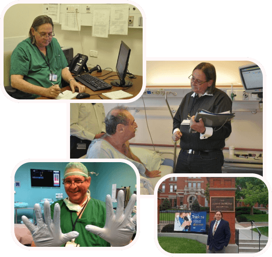

Профессор
Хаим Гутман
Известный онколог, активно участвует в работе медицинских союзов, включая Союз врачей Израиля, Израильскую ассоциацию хирургов, Израильское общество хирургической онкологии, Европейскую ассоциацию онкохирургии, Общество онкохирургии США.
-
Опыт
40 лет
-
Пациентов
18 000+
-
Сертификатов
35+


О профессоре Хаиме Гутмане
Профессор Хаим Гутман, известный онколог, активно участвует в работе медицинских союзов, включая Союз врачей Израиля, Израильскую ассоциацию хирургов, Израильское общество хирургической онкологии, Европейскую ассоциацию онкохирургии, Общество онкохирургии США.
Профессор Гутман окончил медицинскую школу при медицинском факультете имени Саклера, Тель-Авивского университета с отличием и получил лицензию на общую хирургию. После этого он прошел обучение в онкологическом центре MD Anderson в Хьюстоне (США) в качестве научного сотрудника и соисследователя в области онкологической хирургии. Он является преподавателем на медицинском факультете Тель-Авивского университета, автором множества научных работ, статей и публикаций в известных медицинских журналах. За свои научные достижения он был удостоен множества наград и стипендий, включая премию Фонда онкологического центра Андерсона в США в 1992 году.
В настоящее время Хаим Гутман занимает должность ведущего хирурга в одной из лучших клиник страны и специализируется на онкологических заболеваниях. Он имеет более 35 лет успешной практики в лечении сложных клинических случаев. Его специализация включает лечение множества патологий, таких как рак молочной железы, опухоли кожи и мягких тканей (меланома, саркома), проведение люмпэктомии, тотальной мастэктомии, хирургия и реконструкция молочных желез.
- Хирургическое лечение онкологических заболеваний, включая рак молочной железы, разработка новаторских хирургических методик и тестирование их эффективности в клинической практике.
- Применение современных малоинвазивных методов для удаления злокачественных опухолей кожи, таких как плоскоклеточный рак, меланома и базалиома.
- Использование малоинвазивных методов хирургического удаления опухолей в органах пищеварительной системы.
- Терапевтическое лечение саркомы мягких ткане и исследования в области инструментальной онкодиагностики, органосохраняющей хирургии при лечении рака молочной железы и других видов онкологических заболеваний.
Цитата профессора
В своей практике применяю передовые методы диагностики, современные медицинские технологии и протоколы лечения
Хаим Гутман
Услуги профессора Хаима Гутмана
Профессор Хаим Гутман сотрудничает с крупнейшими и наиболее известными медицинскими клиниками в Израиле, в том числе Тель-Авивский медицинский центр Ихилов (Сураски), медикал центр «Герцлия», частная клиника «Рафаэль». Пациент может выбрать лучшую клинику, опираясь на отзывы, рейтинги, изучив репутацию мед учреждения, а также руководствуясь своим опытом и личными впечатлениями.
- Хирургическое лечение онкологических заболеваний, включая рак молочной железы, разработка новаторских хирургических методик и тестирование их эффективности в клинической практике.
- Применение современных малоинвазивных методов для удаления злокачественных опухолей кожи, таких как плоскоклеточный рак, меланома и базалиома.
- Использование малоинвазивных методов хирургического удаления опухолей в органах пищеварительной системы.
- Терапевтическое лечение саркомы мягких ткане и исследования в области инструментальной онкодиагностики, органосохраняющей хирургии при лечении рака молочной железы и других видов онкологических заболеваний.